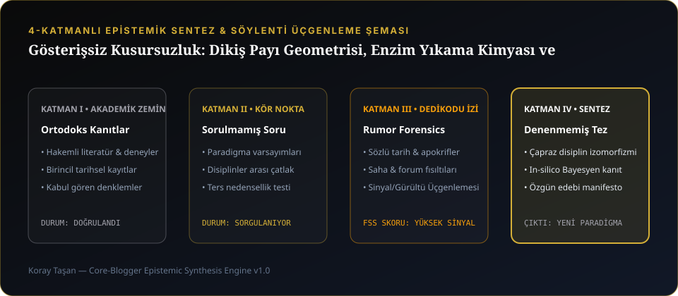

Gösterişsiz Kusursuzluk: Dikiş Payı Geometrisi, Enzim Yıkama Kimyası ve Zamansız Giyilebilir Tasarım
İnsanların yürüyen bir reklam panosuna dönüştürüldüğü çağda, gücünü logosundan değil dokusundan alan UNDER.CORE manifestosu.
4 Katmanlı Epistemik Araştırma Çekirdeği
1. Yürüyen Reklam Panosu Olmayı Reddetmek
Göğsünde dev harflerle marka yazan kıyafetler, giyen kişinin karakterini değil markanın pazarlama bütçesini konuşturur. core.konfection'da marka kimliğimiz dışarıdan bağırmaz; iç yakadaki dokuma etikette, dikişlerin santimetredeki vuruş sıklığında (SPI) ve kumaşa dokunduğunuz ilk saniyedeki soğuk-ipeksi histe saklıdır.
2. Biyo-Enzim Yıkama İle Sıfır Tüylenme (Anti-Pilling)
Pamuk ipliğinin yüzeyinde gözle görülmeyen mikro-tüyler bulunur. Üretim hattımızda uyguladığımız doğal selülaz enzim banyosu, bu serbest uçları kumaş henüz dikilmeden temizler. Sonuç: Yıllarca giyilse bile tüylenmeyen, rengi solmayan pürüzsüz bir yüzey.
3. Gece Siyahı, Ham Ekru ve Kurşun Gri
UNDER.CORE renk paleti, stüdyodan sahneye, gece yolculuğundan çalışma masasına kadar her ortamda birbiriyle saniyeler içinde eşleşecek şekilde kalibre edilmiştir.
